Everything on Guide
In the office app, press Help and type everything on guide
: the tour plays on your own screen, with your own data.
-
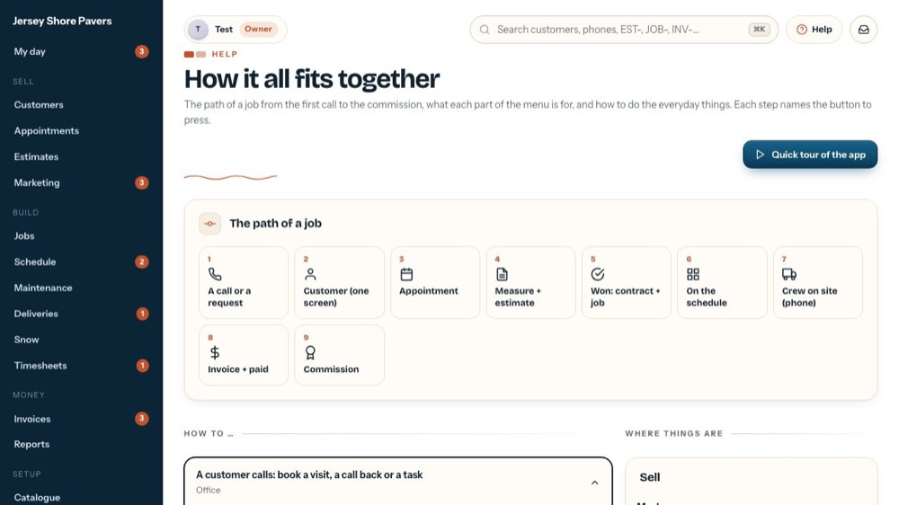
1The Guide
How it all fits together: the path of a job, how to do the everyday things, and what each part of the menu is for.
-
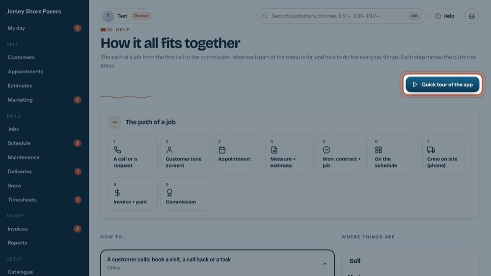
2Quick tour of the app
Plays a short tour of the main screens, one after another.
-
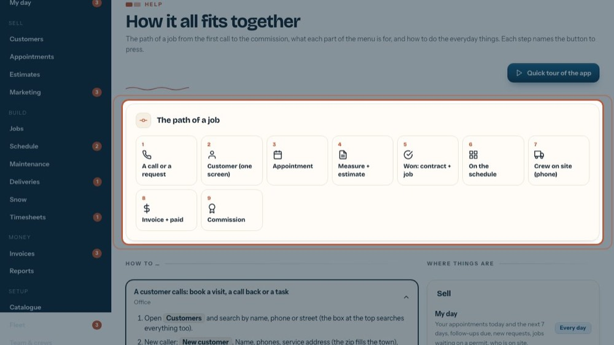
3The path of a job
From the first call to the commission, in nine steps.
-
 4
4Each step opens its screen
Click a step, like 1 · A call or a request, to open the screen where it happens.
-
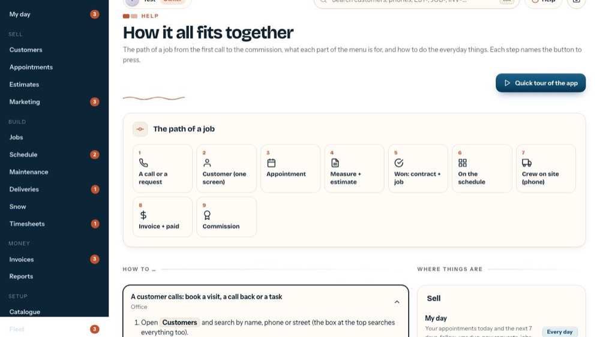
5Crew on site
This one happens on the crew's phone. It opens the Schedule, where you see who is where.
-
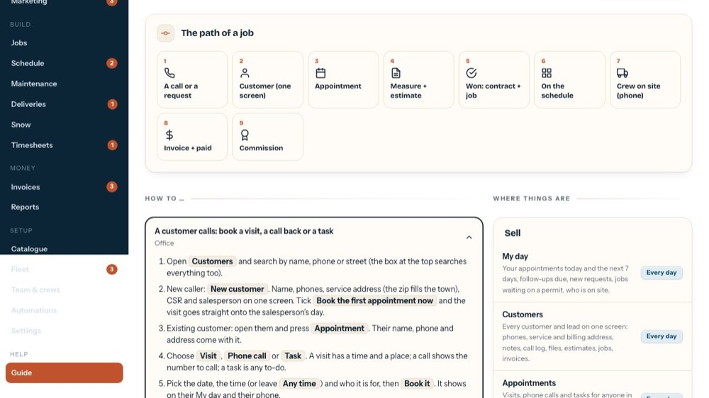
6How to …
The everyday jobs, step by step. The bold words are the buttons to press.
-
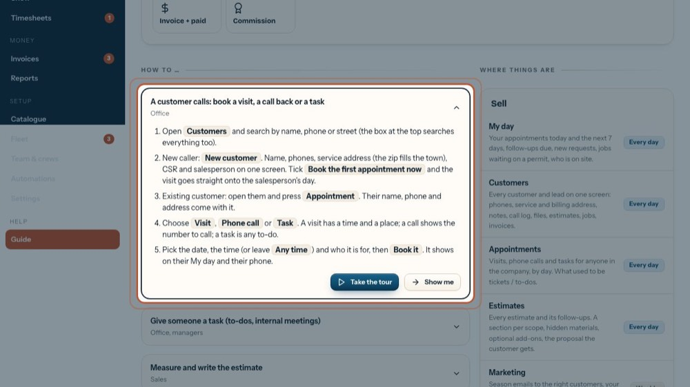
7An open how-to
Numbered steps, with who usually does it under the title.
-
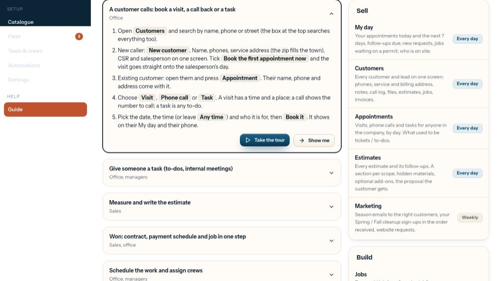
8Take the tour
Plays that how-to on the real screens, pointing at each button, like this tour.
-
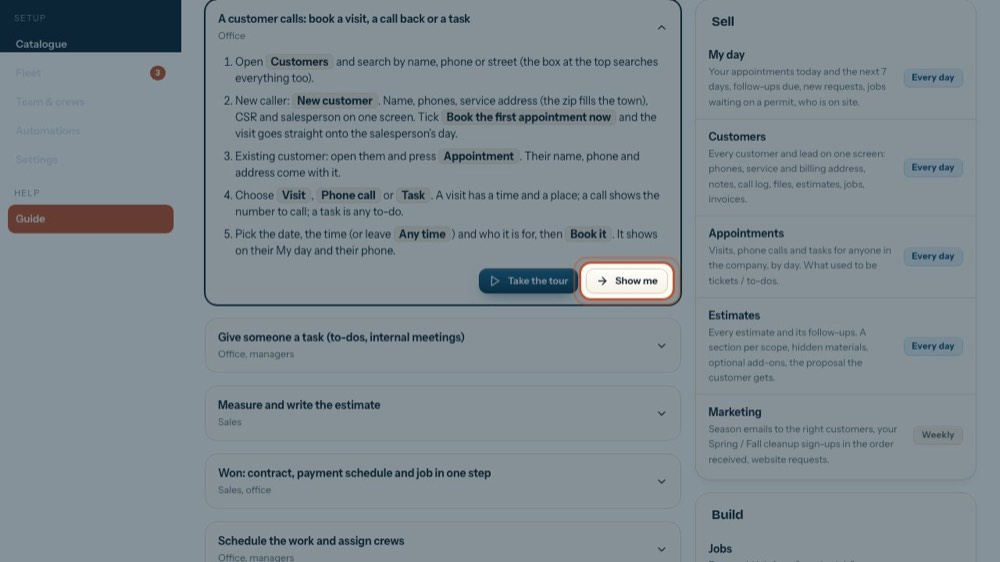
9Show me
Just opens the screen where it happens.
-
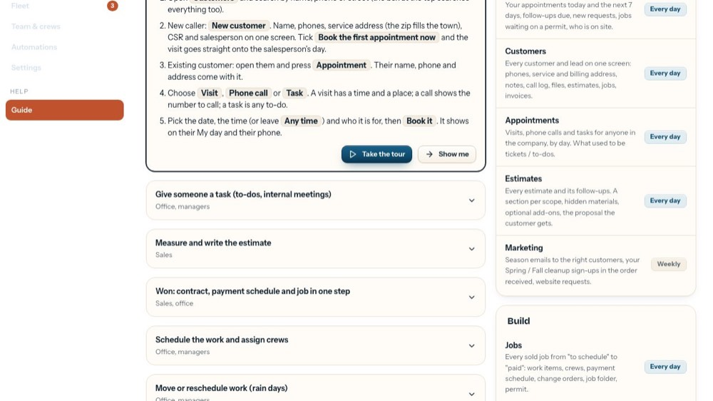
10Open another
Click a title to open it; the one that was open closes.
-
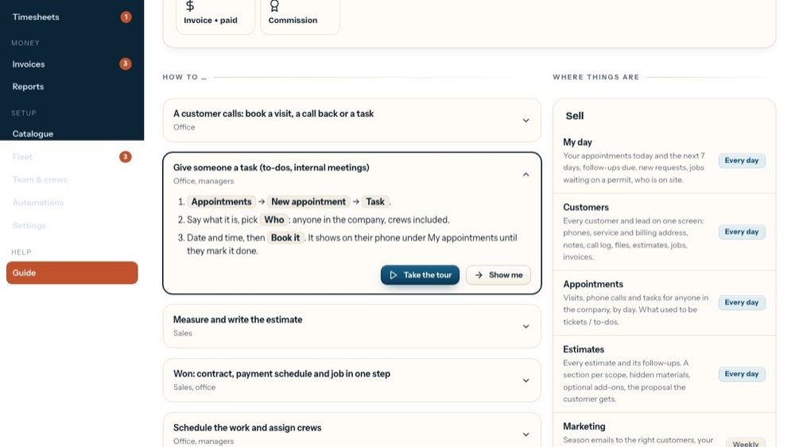
11Now open
Its steps, and its own Take the tour.
-
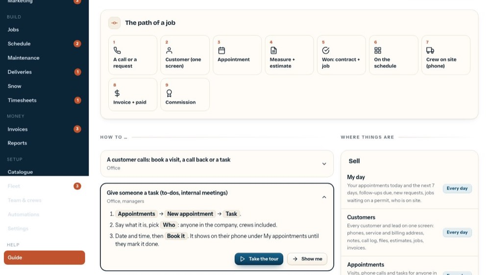
12Where things are
Every part of the menu, what it's for and how often you'll use it.
-
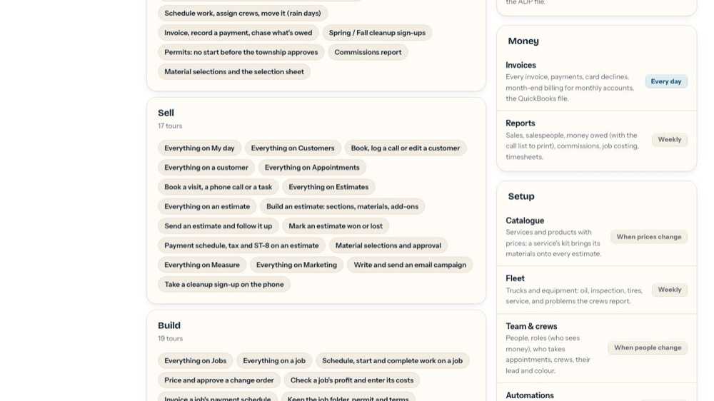
13Sell
My day, Customers, Appointments, Estimates and Marketing.
-
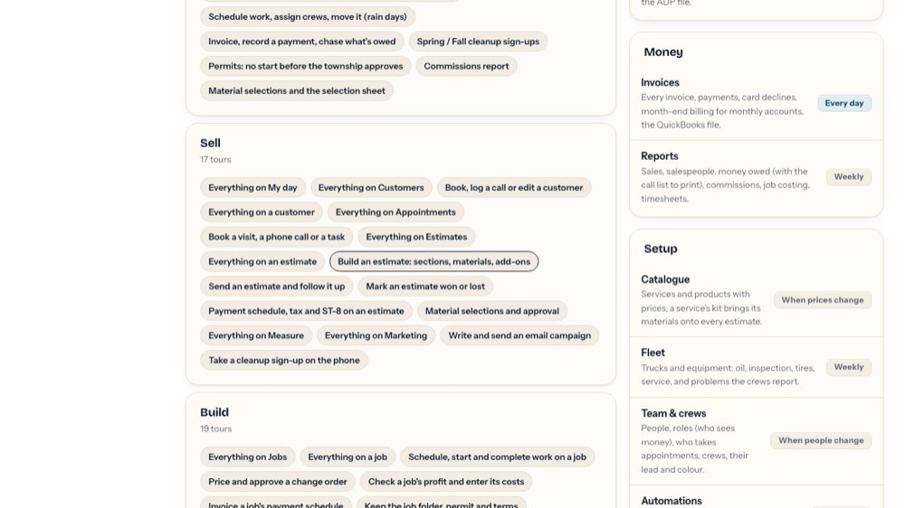
14Build
Jobs, Schedule, Maintenance, Deliveries, Snow and Timesheets.
-
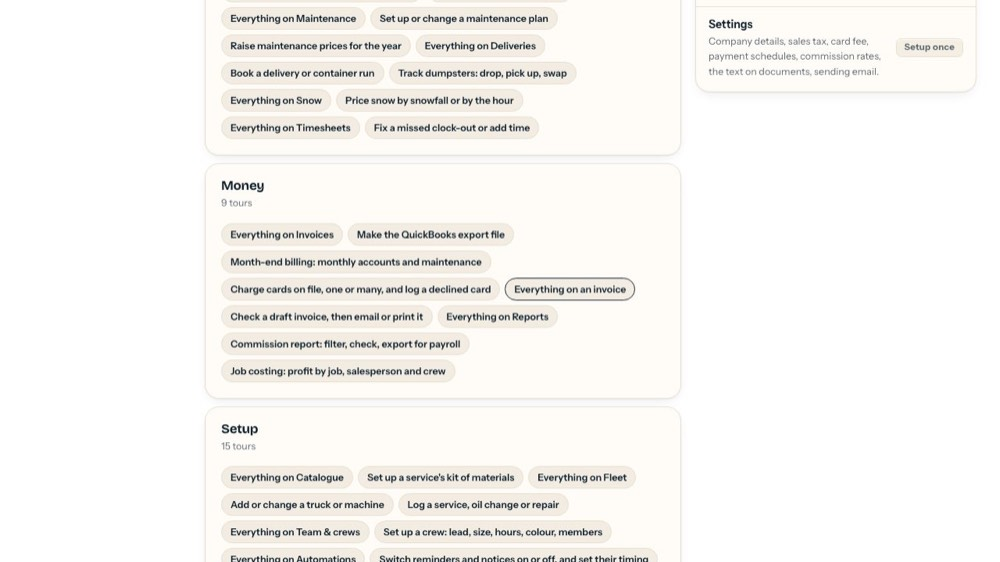
15Money
Invoices and Reports, for people who see money.
-
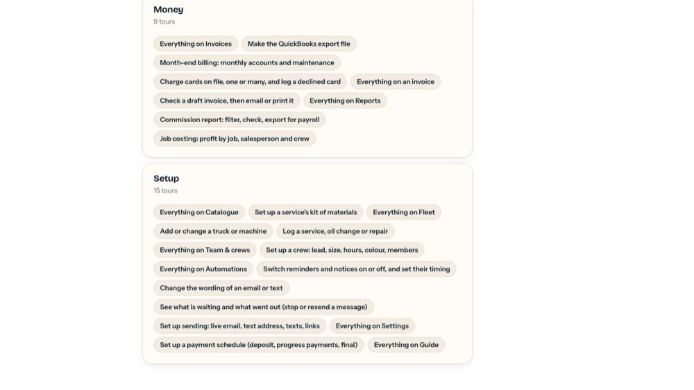
16Setup
Catalogue, Fleet and, for the owner and office, Team & crews, Automations and Settings.
-
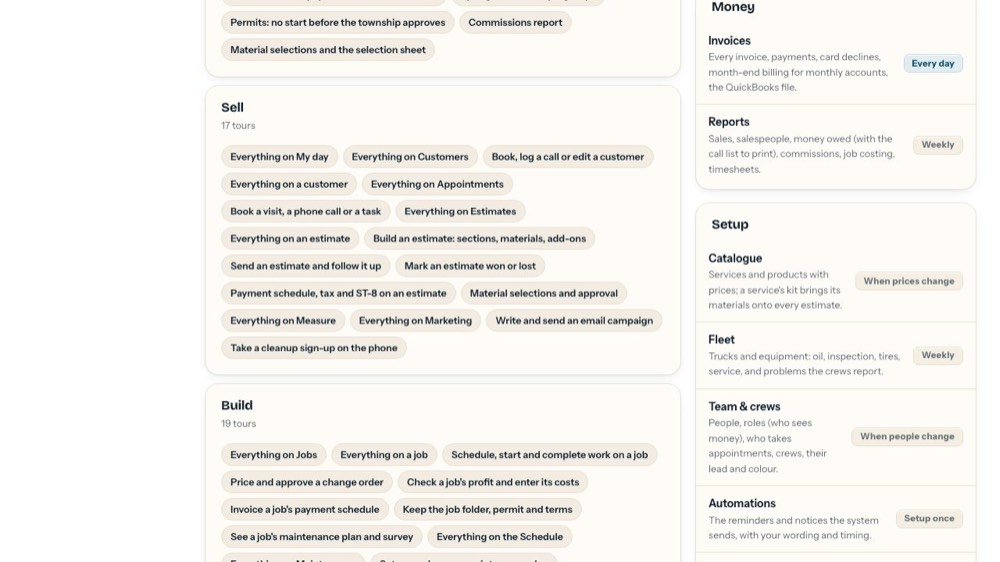
17Open a screen
Click a row to open that screen. The tag says how often it's used.
-
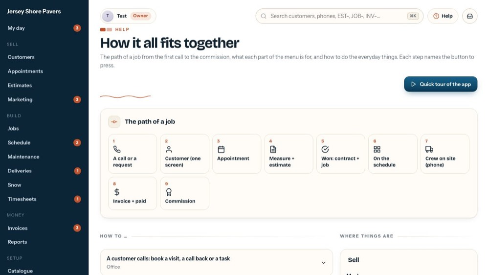
18Help on every screen
Ask in your own words, or pick "Show me everything on this screen" for a tour like this one.
-
 19
19Search
Finds customers, phones, streets and EST-, JOB- or INV- numbers from any screen (⌘K).